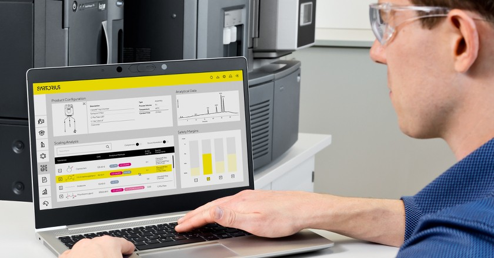

- Exsim은 싸토리우스에서 자체 개발한 시뮬레이션 프로그램 입니다.
- 이 프로그램을 이용하여 실제 테스트 없이 extractable data를 얻을 수 있습니다.
- Exsim에 특정 조건을 입력하면 extractable database를 기반으로 해당 조건 하에서 발생될 수 있는 extractable data가 추출됩니다.
- 실제 시험을 진행하지 않아도 되므로 시험/부대 비용과 기간을 줄일 수 있습니다.
| Exsim | Extractables Test | |
|---|---|---|
| 기간 | 약 3~4주 이내 | 약 6~8주 (접촉 시간에 따라 늘어날 수 있음, 추출 및 분석 4~5주 소요) |
| 필요품목 | 없음 | 제품, Solvent, 운송 등 |
| 비용 | 시험항목 only |
* 시료 전 처리 (pooling, extraction 등) * 분석 (GC, LC, ICP-MS 등) * 제품,보관 및 운속 관련 비용 발생 |
- 일반적으로 고객사에서 RA를 통해 필요 여부를 판단하고 있으며, 임상 2~3상 때 주로 진행하고 있습니다. (허가 신청 시 E&L data 필요)
- Container 혹은 Process contact material에서 유래될 수 있는 extractable & leachables에 대한 위험이 있다고 판단
- Extractables testing 필요
- 자사 제품의 경우 Exractables assessment (Exsim)으로 진행 가능
(Extractables database를 기반으로 데이터를 추출하므로 자사 제품에 한해 진행할 수 있습니다.)
- 프랑스의 Aubagne lab.에서 진행 됩니다.
- POP sheet 작성 및 MSDS 전달 : POP sheet 다운로드
- Esxim 가능 여부 확인 및 견적 전달
- 발주 접수
- 프로토콜 작성, 검토 및 승인
- Exsim 진행
- 레포트 작성, 검토 및 승인
- 완료
- Exsim (Extractables assessment) : 약 850만원
- Extractable Testing : 약 5,500만원
- 부가세 제외 / contact material 1개 / timepoint 1개 기준
- 계약 및 발주 기간 제외, 약 2~3주 정도 소요됩니다.
- 그럼요 가능합니다. DRAFT REPORT 다운로드
- 사업자등록번호
- 싸토리우스코리아(유) : 220-81-02111
- 싸토리우스코리아바이오텍(유) : 129-81-83994
- 대표이사 : 김덕상
- CONTACT INFO
- 주소 : 경기도 성남시 분당구 판교역로 220 쏠리드스페이스 8층
- 우편번호 : 13493
- Tel : 031-622-5700
- Fax : 031-622-5799